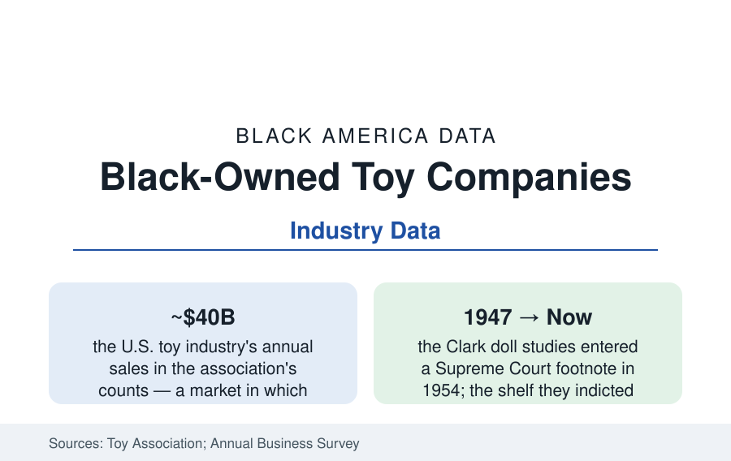

Black Business
Black-Owned Toy Companies: The Doll Aisle as a Data Problem
Black children are a fifth of the toy market's customers — and the shelf, the design rooms, and the ownership took a century to notice. The industry census and the founders changing it.

Few industries' data carry a Supreme Court citation: the doll studies of the 1940s — Kenneth and Mamie Clark's experiments showing Black children preferring white dolls under segregation's schooling — became footnote eleven of Brown v. Board, and the doll aisle became, in the public record, a measure of what the culture hands its children. The business that shelf belongs to is a forty-billion-dollar industry in which Black families spend in proportion to their numbers, Black designers and owners hold a sliver of the firms, and the last fifteen years have produced a visible founding generation of Black-owned toy companies. This article reads the toy file — the science, the shelf, and the census.
The Shelf: Representation as Market Data
The representation record is tracked by the industry's own retail audits and the academic shelf studies: Black dolls in the major lines (the flagship fashion-doll brand's Black share of SKUs running in the range of a fifth to a quarter of the core line in the recent counts — a transformation from the single 'friend doll' era that lasted into the 2000s, driven by the collector and parent demand the sales data finally priced), the licensing shelf (the Black franchise characters' toy lines among the industry's top sellers in their release years — the Black Panther and Spider-Verse lines' NPD rankings the demand proof in the register tape), and the independent shelf (the natural-hair dolls, the STEAM kits with Black girl protagonists, the bilingual and African-diaspora lines of the indie tier). The consumer research closes the loop the Clarks opened: the modern doll-preference and self-concept studies run in a market where the choice now exists — and the purchasing data record Black parents paying premiums for accurate representation (the hair texture, the skin-tone range, the professions on the box) in the direct-to-consumer tier where the indie brands live.
The Ownership Census: Design Rooms and Founders
The ABS's manufacturing and publishing slices count Black-owned toy and game firms in the low hundreds — micro-firms against an industry whose top three manufacturers take the majority of the market — and the design workforce inside the majors (the toy designers and engineers, an uncounted-by-race profession whose association demographics are visibly thin in the trade's own photography) mirrors the media file. The founding generation's profile in the trade record: parent-founders, disproportionately mothers, originating in the documented personal search (the doll that did not exist for their own child — the founding story of a striking share of the tier, from the natural-hair doll lines to the Black boy-targeted action and STEAM brands), capitalized through the community-funding stack of the financing article (Kickstarter's toy category a documented door — several of the tier's signature brands launched on six-figure crowdfunding), then facing the industry's true gates: the safety-testing and manufacturing minimums (the overseas factory MOQs pricing the first run at a working family's stake), the retail buyers (the big-box toy aisle's planogram allocated a year out, the indie shelf-space programs the majors' retailers opened in the 2020s in the trade record), and the licensing economy (the indie brand's exit frequently a license or acquisition by the majors — the shelf's representation gains and the ownership ledger diverging in the deal data).
The Adjacent Shelves: Books, Games, and the Play Economy
The toy file shades into the play economy's neighboring counts: the children's-book shelf (the CCBC counts of the librarians article — the picture-book characters and creators' shares climbing through the teens percent), the Black-owned children's publishers and subscription boxes (the book-club models delivering Black-authored children's literature monthly — their subscriber counts a measurable institution), the board-game and puzzle tier (Black designers' titles in the hobby market's award records), and the video-game edge (Black players at population share or above in the ESA consumer data; Black game developers at roughly four to five percent of the industry's workforce in the IGDA surveys — the play economy's largest shelf repeating the pattern exactly). The policy and philanthropy layer is thin but real: the museum and library play programs, the toy-lending libraries of the older settlement tradition, and the holiday-drive economy (the Black toy drives and the 'buy Black' holiday campaigns whose sales effects the indie tier's founders report as their December lifeline in the trade interviews).
Reading the Toy Data
A fifth of the customers, a sliver of the owners, a shelf transformed within one childhood: the toy file is the business section's most legible parable — demand was never missing, the product was, and the correction is being manufactured, much of it by the customers themselves, at kitchen-table scale against a forty-billion-dollar incumbent shelf. The Clarks' dolls were evidence in the case that remade American education. Their descendants' dolls are a market. The data hold both facts without flinching, which is what the Clarks would have wanted counted.
More in Black Business
Black-Owned Businesses: Counts, Receipts, and the Representation Gap
About 161,000 Black-owned employer firms and three million solo ventures: how the Census Bureau counts Black business ownership, where firms concentrate, and the gap between population share and business share.
Black Median Net Worth: The Wealth Gap in Federal Reserve Data
The Federal Reserve puts Black median family net worth at $44,900, against $285,000 for White families — about 16 cents on the dollar. The widest gap in economic data.
Black Buying Power: The $1.8 Trillion Consumer Economy
Black buying power is estimated at about $1.8 trillion — larger than the economy of most nations. What the figure measures, who produces it, and what it buys.
Source: U.S. Census Bureau Annual Business Survey; Toy Association industry data; NPD/Circana consumer data; Clark doll-study scholarship and company records.